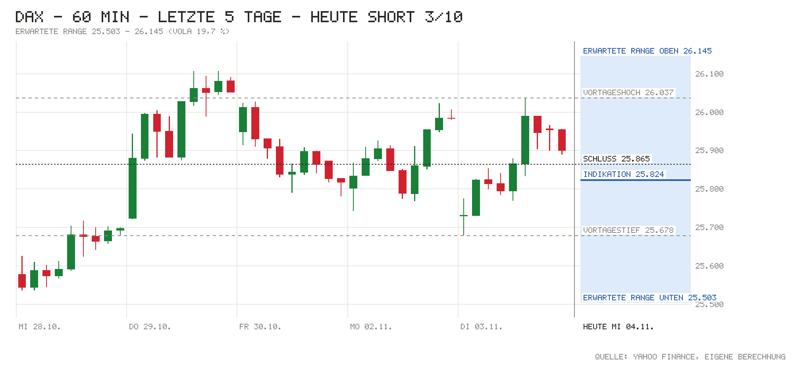

Tagesentscheidung 9:00–17:30 Uhr
Den Ausschlag geben der Midterm-Ausgang (Demokraten laut Hochrechnungen mit Mehrheit im Kongress, droht „Gridlock“), US-Renditen um 4,95 %, eine zu 79 % eingepreiste Fed-Erhöhung im Dezember und Brent über 104 USD. Das wichtigste Gegenargument: Die Nacht-Verluste sind schon weitgehend aufgeholt (IG nachts 25.532, X-DAX jetzt 25.824), der Trend ist intakt und China zieht kräftig an – daher nur geringe Überzeugung.
- Erwartete Spanne
- 25.503 – 26.145
- Eingepreist (Tagesoption)
- ±1,24 %
Einschätzung von der Xetra-Eröffnung bis zum Xetra-Schluss. Spanne = ±1 Tages-σ aus der DAX-Tagesoption (ca. 68 %). Keine Anlageberatung.
Chart

Signale
| Signal | Wirkung | Stand und Einordnung |
|---|---|---|
| Vorgaben USA | Gegenwind | S&P 500 +0,36 %, Nasdaq 100 +0,68 % (Schluss gestern). Futures nach Wahlnacht zeitweise −1,3 % / −2,2 %, jetzt S&P −0,22 %, Nasdaq −0,33 %. |
| DAX vorbörslich | Gegenwind | X-DAX 25.824 (−0,21 %), 08:14 Uhr 25.828 (−0,14 %); IG nachts zeitweise 25.532. |
| Asien & China | Neutral | Nikkei −1,42 % (tiefster Stand seit Mai), dagegen Shanghai +2,16 %, CSI 300 +2,31 %, Hang Seng +1,41 %. |
| Datenüberraschungen | Neutral | US-ISM Industrie 55,5 vs. Prognose 54,5 (Mo.): starke Konjunktur, aber Futter für Zinserhöhungen. Heutige EU-Daten stehen noch aus. |
| Zinserwartung | Gegenwind | Fed 9.12.: 79 % für +25 Bp.; EZB-Einlagensatz 2,5 %, Eurozone-Inflation heute erwartet 4,0 % (zuvor 3,8 %). |
| Renditen | Gegenwind | Bund 10J 3,33 % (+2 Bp.), US 10J 4,95 % (+6 Bp., Yahoo) – hohes Niveau drückt Bewertungen. |
| Kreditstress | Neutral | FRED n/v; HYG +0,12 %, LQD +0,01 % – kein Stress. |
| Öl & Dollar | Gegenwind | Brent 104,14 USD (+0,52 %), EUR/USD 1,1240 (+0,43 %) – teure Energie, festerer Euro. |
| Trend | Rückenwind | DAX 25.865 über 21-T. (25.453), 50-T. (25.568) und 200-T.-Schnitt (24.906). |
| Positionierung | Neutral | COT 27.10.: Hedgefonds im S&P-Future netto −400.604 (−29.359), keine neue Extremlage. |
| Unternehmensnachrichten | Neutral | Conti und Fresenius heben Prognose, Heidelberg Materials über Erwartung; BMW mit Gewinnwarnung. |
| Profi-Sicht | Neutral | ING: Demokraten-Sieg weitgehend eingepreist, Dollar kurzfristig unter Druck. |
| Termine 9:00–17:30 | Neutral | EZ-Inflation 11:00, ADP 14:15, ISM Dienste 16:00 – kein Top-Ereignis, aber Bewegungspotenzial. |
Bilanz von gestern
Noch keine bewertete Entscheidung – dies ist eine der ersten Ausgaben im neuen Format; die Bilanz startet mit den nächsten Läufen.
Marktlage
| Markt | Stand | Veränderung |
|---|---|---|
| DAX (Schluss 03.11.) | 25.864,62 | −0,45 % |
| DAX vorbörslich (X-DAX) | 25.824 | −0,21 % |
| S&P 500 (Schluss 03.11.) | 7.568,92 | +0,36 % |
| Nasdaq 100 (Schluss 03.11.) | 28.180,26 | +0,68 % |
| Dow Jones (Schluss 03.11.) | 51.786,72 | −0,38 % |
| US-Futures (S&P / Nasdaq) | 7.580,00 / 28.211,50 | −0,22 % / −0,33 % |
| Nikkei 225 | Eröffnung 62.973 → Schluss 62.189 | −1,42 % |
| Shanghai Composite | Eröffnung 3.605 → Schluss 3.686 | +2,16 % |
| CSI 300 | Eröffnung 4.007 → Schluss 4.101 | +2,31 % |
| Hang Seng | Eröffnung 23.452 → aktuell 23.858 | +1,41 % |
| EUR/USD | 1,1240 | +0,43 % |
| Brent (USD/Barrel) | 104,14 | +0,52 % |
| Gold (USD/Unze) | 4.032,10 | +2,33 % |
| VIX | 20,83 | −1,51 % |
China: Ein konkreter Auslöser für das Plus ist nicht gemeldet; Quellen verweisen auf seit Wochenbeginn laufende Stützungsmaßnahmen der Regulierer (Swap-Operationen, Liquiditätshilfen) nach dem schwächsten Oktober seit 2015. Mittagsberichte zeigten Shanghai noch nahe Vortag – Stand laut Datenabruf 08:32 Uhr. Japan nach Feiertag am Dienstag wieder offen.
Anleihen & Zinsen
| Markt | Stand | Veränderung |
|---|---|---|
| Bund 2J | 3,02 % | n/v |
| Bund 10J | 3,33 % | +2 Bp. |
| US-Treasury 2J (offiziell, 03.11.) | 4,61 % | n/v |
| US-Treasury 10J | 4,94 % (live) / 4,95 % (Schluss) | +6 Bp. (03.11.), heute −1 Bp. |
| Fed, Sitzung 09.12. | Erhöhung um 25 Bp. erwartet | 79 % Wahrscheinlichkeit |
| EZB-Einlagensatz | 2,50 % | zuletzt +25 Bp. (16.09.) |
| Euro-Hochzins-Aufschlag | n/v (FRED) | n/v |
| US-Hochzins (Ersatz: HYG) | 76,98 USD | +0,12 % (Tag) |
Termine heute
- vorb. Quartalszahlen: BMW, Continental, Fresenius, Heidelberg Materials, Vonovia, Scout24
- 09:55 Deutschland: Einkaufsmanager Dienste – Prognose 51,7 · zuvor 52,9; Composite – Prognose 52,8 · zuvor 53,8
- 10:00 Eurozone: Einkaufsmanager Dienste – Prognose 51,7 · zuvor 53,0; Composite – Prognose 51,9 · zuvor 53,1
- 11:00 Eurozone: Verbraucherpreise – Prognose 4,0 % · zuvor 3,8 %; Kern – Prognose 2,5 % · zuvor 2,5 %
- 14:15 USA: ADP-Beschäftigung – Prognose 67K · zuvor 90K
- 14:20 EZB: Rede Philip Lane
- 14:30 USA: Handelsbilanz – Prognose −107,9 Mrd. · zuvor −105,6 Mrd.
- 15:45 USA: Einkaufsmanager Dienste – Prognose 57,9 · zuvor 58,8
- 16:00 USA: ISM Dienste – Prognose 54,8 · zuvor 54,9
- 16:30 USA: Rohöllagerbestände (EIA) – Prognose −1,7 Mio. · zuvor −1,9 Mio.
Nachrichten zu DAX-Werten
- BMW: Zweite Gewinnwarnung des Jahres: Auto-EBIT-Marge 2026 nun −0,5 bis +0,5 % (zuvor 1–3 %), Absatzrückgang 5–9,9 %; Q3-Nettogewinn 1,45 Mrd. € (−15 %). Einschätzung: negativ, belastet Autosektor.
- Continental: Bereinigte EBIT-Marge 2026 auf 13,4–14,0 % angehoben (zuvor 12,0–13,5 %), Free Cashflow 1,0–1,3 Mrd. €; vorbörslich ca. +2,7 %. Einschätzung: positiv.
- Fresenius: Zweite Prognoseanhebung 2026 nach starkem Q3 (Kabi, Helios). Einschätzung: positiv.
- Heidelberg Materials: Q3-Ergebnis +9 % auf 1,28 Mrd. € (Konsens 1,24 Mrd.), Umsatz 6,41 Mrd. €, Prognose bestätigt, Sparprogramm um 300 Mio. € erweitert. Einschätzung: positiv.
- Vonovia: Neunmonatsbericht nach bereits am 28.10. gedämpfter Prognose (EBITDA 2026 untere Hälfte 2,95–3,05 Mrd. €). Einschätzung: neutral, weitgehend bekannt; hohe Renditen bleiben Gegenwind.
Profi-Sicht & Positionierung
- ING THINK: Ein Demokraten-Sieg bringt dem Dollar kurzfristig Druck, aber keinen Strukturbruch – EUR/USD findet Halt um 1,12; der Bondmarkt hatte eine Demokraten-Mehrheit im Repräsentantenhaus weitgehend eingepreist (FX Daily, Rates Spark).
- Positionierung (COT, Stand 27.10.): Hedgefonds bauen Short im S&P-Future aus (netto −400.604, −29.359), Asset Manager Long (+22.072); im 10J-Treasury Hedgefonds-Short deutlich ausgeweitet (−120.051). Keine neue Extremlage.
Quellen
- Marktdaten per Skript: Amber Terminal / Yahoo Finance (Kurse, Futures), Eurex (DAX-Tagesoption ODAP), onvista (VDAX), Nasdaq (Kalender), CNBC / Bundesbank / US-Treasury (Renditen), CFTC (COT), ING THINK
- dpa-AFX: Börsentag auf einen Blick – Verluste nach US-Zwischenwahl
- dpa-AFX: DAX-FLASH – Politische Unsicherheit nach US-Zwischenwahlen
- Aktien Frankfurt Ausblick: Leichte Verluste nach Ausgang der US-Zwischenwahlen
- Fox Business: US stock futures fall amid Democratic midterm wins
- Investing.com: Midterm-Ergebnisse
- dpa: Gewinn von BMW schrumpft
- EQS-News: Continental erhöht Ausblick
- Reuters: Fresenius raises 2026 outlook
- Heidelberg Materials wächst weiter – Jahresziele bestätigt
- Vonovia dämpft Prognose
- Bloomberg: China signals more stock support